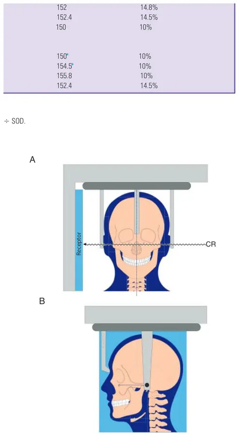
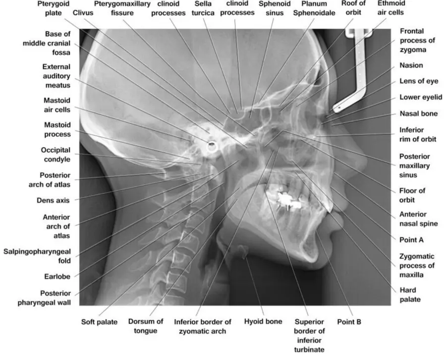

نسخه استخراجشده؛ ترجمه یا تأیید علمی انجام نشده است. وضعیت: captured
سفالوگرام لترال «شایعترین رادیوگرافی پروجکشن کرانیوفاسیال در دندانپزشکی» است — و بیشتر برای «ارزیابی رشد، و تشخیص و طرح درمان ارتودنسی و ارتوگناتیک» به کار میرود.

هفت اندیکاسیون:
وضعیتدهی — پنج شرط: نوک میلههای گوشی محکم درون مجرای شنوایی خارجی، صفحهی ساژیتال میانی عمودی، صفحهی فرانکفورت افقی، بیمار در اینترکاسپیشن طبیعی ببندد، گیرنده موازی صفحهی ساژیتال میانی.
و یک قرارداد جغرافیایی: دستگاههای سفالومتریک میتوانند منبع را در سمت راست یا چپ بیمار داشته باشند؛ ولی «طبق قرارداد، دستگاههای عرضهشده در ایالات متحده با منبع در سمت چپ بیمار مونتاژ میشوند».
پرتو مرکزی: «عمود بر صفحهی ساژیتال میانی بیمار و بر صفحهی گیرنده، و مرکز شده روی مئاتوس شنوایی خارجی.»
و ویژگی تصویر حاصل — که یک واقعیت هندسی اجتنابناپذیر است: «سوپرایمپوزیشن دقیق سمت راست و چپ ناممکن است، چون ساختارهای سمت نزدیک به گیرنده کمتر از همان ساختارها در سمت منبع بزرگنمایی میشوند.»
ولی یک قاعدهی مفید از همین بیرون میآید: «ساختارهای دوطرفهی نزدیک به صفحهی ساژیتال میانی، اختلاف اندازهی کمتری نسبت به ساختارهای دوطرفهی دورتر نشان میدهند.» و مثالش: «زوائد کلینوئید و شاخکهای تحتانی باید تقریباً سوپرایمپوز باشند.»
پیش از هر آنالیزی، یک هشدار مهم: «هدف اصلی سفالوگرام لترال استنتاج روابط میان جمجمه، فکها و دندانهاست. ولی پیش از انجام این آنالیزها، کلیشه باید نظاممند ارزیابی شود تا واریانتهای آناتومیک مرتبط و پاتولوژیهای تصادفی احتمالی شناسایی شوند.»

هشت ناحیه، بهترتیب: